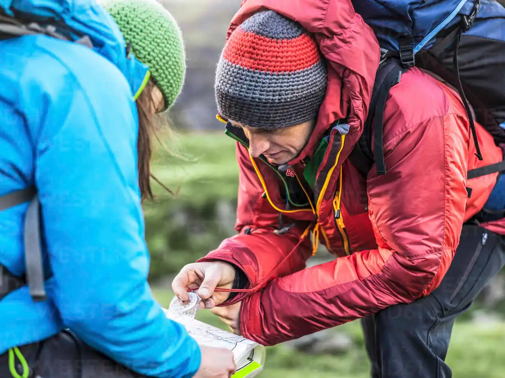

Here's what you'll need for your Munro adventures
With also a List of recommended retailers for equipment needs.
Walking Boots
One of the more important pieces of equipment required is a good pair of walking boots. We recommend
a pair that supports both your feet and ankles. Some of the munro terrain is challenging and one
misstep could cause an injury. A decent pair of walking boots will help prevent this.
Preparation is Key
Know your routes, check the weather before you leave. You'll need lightweight layers and
waterproof clothing to stay dry and warm. Take a map, a torch and a safety kit
in case of accidents, and make sure you carry lots of water and food. Learn how to properly
navigate using a map and compass – lots of Munros are remote.

Safety is Essential
Respect your surroundings and take care all the way. We suggest you leave a route card and an
estimated return time with someone who can call for help if you don't come back on schedule.
Most importantly, have fun! Scotland's Munros are some of the most spectacular places on Earth.
Retailers
Below are our recommend retailers for any equipment needs.